<html>

<head>
    <title>Cube</title>
    <style>
        body {
            margin: 0;
            overflow: hidden;
        }

        canvas {
            width: 100%;
            height: 100%;
        }

        .label {
          display: flex;
          align-items: center;
          justify-content: center;

          width: 88px;
          height: 30px;

          font-size: 14px;
          color: #fff;

          background: rgba(0, 0, 0, 0.6);
          cursor: pointer;
        }

        .label img {
          width: 20px;
        }

        .label p {
          margin-left: 6px;
          font-size: 14px;
        }
    </style>
</head>

<body>
    <!-- 引入three.js -->
    <script src="https://cdn.jsdelivr.net/npm/three@0.126.1/build/three.min.js"></script>
    <!-- 引入 dat.gui -->
    <!-- <script src="https://cdn.bootcss.com/dat-gui/0.7.1/dat.gui.min.js"></script> -->

    <!-- <script src="https://82mou.github.io/threejs/js/OrbitControls.js"></script> -->
    <script type="module">
        import { OrbitControls } from 'https://cdn.jsdelivr.net/npm/three@0.126.1/examples/jsm/controls/OrbitControls.js'
        import { CSS2DRenderer, CSS2DObject } from 'https://cdn.jsdelivr.net/npm/three@0.126.1/examples/jsm/renderers/CSS2DRenderer.js';

        // 场景图加标签位置数据
        let dataList = [
            {
                image: './img/livingRoom.jpg', // 场景贴图(客厅)
                tipsList: [ // 标签数据
                    {
                        position: { x: -205, y: -4, z: -147 }, // 标签位置
                        content: {
                          title: "进入厨房", // 标题
                          index: 1 // 场景下标
                        }
                    },
                ],
            },
            {
                image: './img/kitchen.jpg', // 厨房
                tipsList: [
                    {
                        position: { x: -199, y: -24, z: 145 },
                        content: {
                          title: "进入大厅", // 标题
                          index: 0 // 场景下标
                        }
                    },
                ],
            },
        ]

        let index = 0 // 场景下标

        let scene = null // 场景

        let camera = null // 相机

        let renderer = null // 渲染器

        let labelRenderer = null // 2D渲染器

        let controls = null // 控制器

        // 创建场景
        function renderScene () {
          scene = new THREE.Scene();
          scene.background = new THREE.Color(0x101010);
        }

        // 创建相机（透视投影相机）
        function renderCamera () {
          camera = new THREE.PerspectiveCamera(
              45, // 相机视野
              window.innerWidth / window.innerHeight, // 水平方向和竖直方向长度的比值
              0.1, // 近端渲染距离
              1000 // 远端渲染距离
          );

          // 设置相机位置
          // camera.position.x = 5;
          // camera.position.y = 10;
          // camera.position.z = 10;
          // 设置相机位置简写方式：
          camera.position.set(50, 0, 40);
        }

        // 创建渲染器
        function renderRenderer () {
          renderer = new THREE.WebGLRenderer(
            {
              antialias: true,     //抗锯齿
            }
          );

          // 设置渲染器的大小（长宽）（设置渲染器为全屏）
          renderer.setSize(window.innerWidth, window.innerHeight);

          // 将渲染结果展示到页面上
          document.body.appendChild(renderer.domElement);
        }


        // 创建2D渲染器
        //
        function render2DRenderer () {
          labelRenderer = new CSS2DRenderer();
          labelRenderer.setSize(window.innerWidth, window.innerHeight);
          labelRenderer.domElement.style.position = 'absolute';
          labelRenderer.domElement.style.top = 0;
          // labelRenderer.domElement.style.pointerEvents = 'none';
          document.body.appendChild(labelRenderer.domElement);
        }


        // 创建控制器
        function renderControls () {
          controls = new OrbitControls(camera, labelRenderer.domElement);
          controls.minDistance = 1;
          controls.maxDistance = 100;
          controls.enablePan = false;
        }

        // 创建球体
        function renderModel () {
          const sphereGeometry = new THREE.SphereGeometry(16, 50, 50);
          // 反转球体
          sphereGeometry.scale(16, 16, -16);
          // 加载贴图材质
          const texture = new THREE.TextureLoader().load(dataList[index].image);
          // 创建法线网格材质
          const sphereMaterial = new THREE.MeshBasicMaterial({ map: texture });

          // 创建网格
          // 第一个参数是几何模型，第二参数是材质
          const sphere = new THREE.Mesh(sphereGeometry, sphereMaterial);

          // 将网格添加到场景中
          scene.add(sphere);
        }

        // 获取鼠标点击三维坐标
        function onDocumentMouseDown( event ) {
          event.preventDefault();
          const vector = new THREE.Vector3();//三维坐标对象
          vector.set(
            ( event.clientX / window.innerWidth ) * 2 - 1,
            - ( event.clientY / window.innerHeight ) * 2 + 1,
          0.5 );
          vector.unproject( camera );
          const raycaster = new THREE.Raycaster(camera.position, vector.sub(camera.position).normalize());
          const intersects = raycaster.intersectObjects(scene.children);
          if (intersects.length > 0) {
            const selected = intersects[0];//取第一个物体
            console.log("x坐标:"+selected.point.x);
            console.log("y坐标:"+selected.point.y);
            console.log("z坐标:"+selected.point.z);
          }
        }

        // 添加标识
        function addTipsSprite() {
          // let tipTexture = new THREE.TextureLoader().load('./img/up.png');
          // let material = new THREE.SpriteMaterial({ map: tipTexture });
          dataList[index].tipsList.forEach((item) => {
            const laberDiv = document.createElement('div');//创建div容器
            laberDiv.className = 'label';
            laberDiv.innerHTML = `<p>${item.content.title}</p>`;
            // let sprite = new THREE.Sprite(material);
            const pointLabel = new CSS2DObject(laberDiv);
            // pointLabel.scale.set(12, 12,12);
            pointLabel.position.set(item.position.x, item.position.y, item.position.z); // 设置标签位置
            // sprite.content = item.content; // 设置标签内容
            scene.add(pointLabel); // 添加到场景中

            laberDiv.addEventListener('click', () => { changeRoom(item.content.index) });
          });


        }

        // 初始化
        function initialize () {
          renderScene()
          renderCamera()
          renderRenderer()
          render2DRenderer()
          renderControls()
          renderModel()
          addTipsSprite()
        }

        // 结合场景和相机进行渲染，即用摄像机拍下此刻的场景
        function render() {
          labelRenderer.render(scene,camera)
          renderer.render(scene,camera);//执行渲染操作
        }

        function animate() {
            // 循环调用函数
            requestAnimationFrame(animate);
            render()
        };

        initialize()

        animate()

        // setTimeout(()=>{
        //   render()
        // },1000)

        // 改变房间
        function changeRoom (i) {
          index = i

          document.body.removeChild(renderer.domElement);
          document.body.removeChild(labelRenderer.domElement);

          initialize()
        }


        // labelRenderer.domElement.addEventListener('click', onDocumentMouseDown);


        controls.addEventListener('change', render);

    </script>
</body>

</html>
